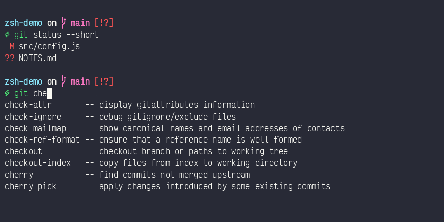
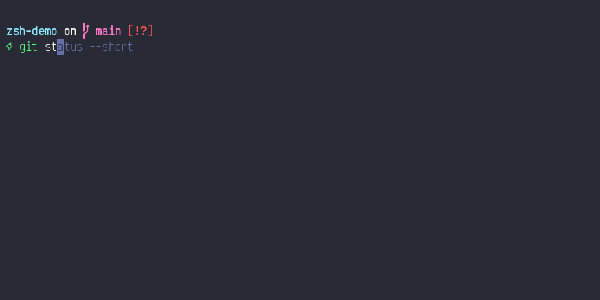
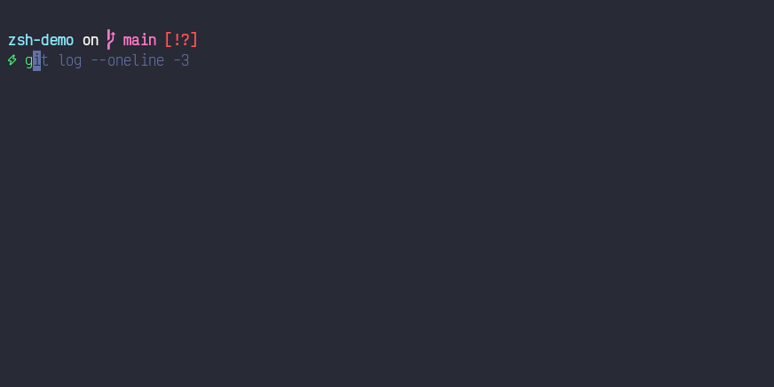
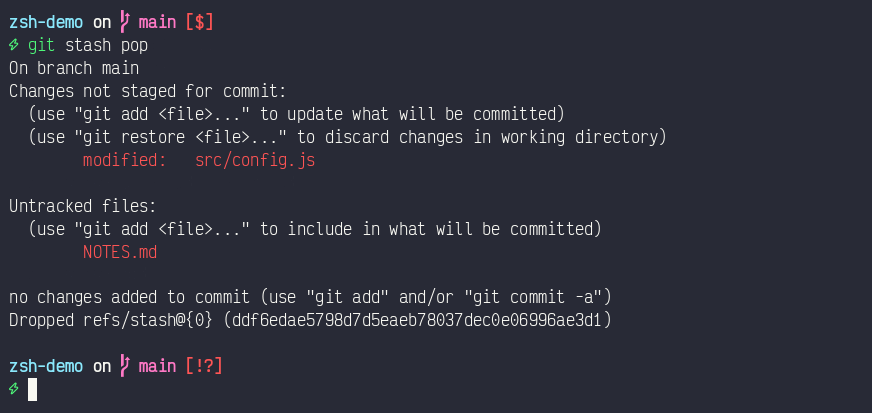

{kind=link}
This post documents the current Zsh setup and the measurements that shaped it. It covers startup performance, completion behavior, plugins, and prompt design. The intended audience is anyone maintaining or reproducing this dotfiles setup.
The complete configuration is available in the dotfiles repository. The current setup uses Oh My Zsh, the Git plugin, command autosuggestions, syntax highlighting, and Spaceship Prompt.
Original startup performance
The baseline identifies which startup costs existed before the framework and plugins. The investigation started with a small Zsh configuration. A configured interactive login shell started in 103.60 ms at the median. The macOS global configuration required 27.88 ms, leaving 75.72 ms for user configuration.
The final benchmark used 5 warm-up launches and 60 measured launches. A Python
harness used time.perf_counter() around /bin/zsh subprocesses. The harness
redirected standard output and standard error to /dev/null.
| Scenario | Median | Mean | 95th percentile | Minimum | Maximum |
|---|---|---|---|---|---|
| Configured interactive login | 103.60 ms | 101.75 ms | 113.95 ms | 83.62 ms | 116.52 ms |
| macOS global files only | 27.88 ms | 26.29 ms | 29.97 ms | 19.10 ms | 31.34 ms |
Configured login with zprof |
111.38 ms | 107.03 ms | 116.10 ms | 82.70 ms | 120.02 ms |
The original zprof result identified completion initialization as the main
shell-function cost. A warm completion cache required 20.78 ms. Rebuilding the
cache required 246.60 ms.
| Function | Warm total | Rebuild total | Rebuild self time |
|---|---|---|---|
compinit |
20.78 ms | 246.60 ms | 95.20 ms |
compdef |
Not present | 84.18 ms | 84.18 ms |
compdump |
Not present | 52.39 ms | 52.39 ms |
compaudit |
10.97 ms | 14.83 ms | 14.83 ms |
Top-level external commands do not appear in zprof. Separate measurements
attributed about 27.35 ms to brew shellenv. Two uname processes added about
12.34 ms.
Changes added to the setup
This chapter summarizes each feature added after the baseline measurement. The setup combines a framework with focused interactive features. The tracked profile guards optional dependencies, so missing Homebrew packages do not prevent shell startup.
| Feature | Purpose | Installation source |
|---|---|---|
| Oh My Zsh | Framework, completion integration, and plugin loading | Manual Git clone |
| Git plugin | Git aliases and helper functions | Bundled with Oh My Zsh |
| Spaceship Prompt | Structured asynchronous prompt | Homebrew |
| Zsh Autosuggestions | History-based command suggestions | Homebrew |
| Zsh Syntax Highlighting | Command-line token and validity highlighting | Homebrew |
| Victor Mono Nerd Font | Prompt and status glyphs | Homebrew cask |
Tracked dot-zprofile |
Portable shared configuration | Dotfiles repository |
The portable setup lives in the
tracked Zsh profile.
Machine-local configuration remains in ~/.zprofile. That local file
sources the tracked profile before applying machine-specific settings.
The shared profile loads Oh My Zsh first. It then loads the existing interactive configuration. This order preserves existing aliases because later alias definitions override Oh My Zsh aliases with the same name.
How completion changed
This chapter compares the original completion path with the framework-managed
path. Zsh provides the completion engine through compinit. Oh My Zsh does
not replace that engine. It configures, validates, and caches the same system.
Previous completion path
The previous configuration called compinit directly. An optimization ran a
full scan once each day, then used compinit -C for later shells.
autoload -Uz compinit
if [[ "$(date +'%j')" != \
"$(stat -f '%Sm' -t '%j' ~/.zcompdump 2>/dev/null)" ]]; then
compinit
else
compinit -C
fi
This approach used ~/.zcompdump and reduced repeated security audits. It
saved about 12 ms inside compinit, but date and stat reduced the measured
shell saving to about 4 ms.
Current Oh My Zsh completion path
Oh My Zsh prepares fpath before running compinit. It adds framework,
custom, and enabled plugin completion directories. This ordering lets plugin
completion definitions participate in the initial cache.
Oh My Zsh uses a host-specific and Zsh-version-specific dump file:
~/.zcompdump-${SHORT_HOST}-${ZSH_VERSION}
The framework records its Git revision and the complete fpath inside that
dump. It removes the dump when either value changes. It also compiles the dump
to Zsh Word Code with zrecompile, which reduces parsing work on later starts.
Completion security behavior also changes. Oh My Zsh uses compinit -i and
reports insecure completion directories through its compfix support. The
current profile leaves this security behavior enabled.
| Behavior | Previous configuration | Current Oh My Zsh configuration |
|---|---|---|
| Completion engine | Native compinit |
Native compinit managed by Oh My Zsh |
| Dump name | ~/.zcompdump |
Host and Zsh-version-specific dump |
| Refresh policy | Full scan once daily | Refresh when framework revision or fpath changes |
| Plugin completions | Existing fpath only |
Plugin directories added before compinit |
| Security check | Full daily, skipped with -C afterward |
Checked through compinit and compfix |
| Compiled dump | Not configured | Recompiled to Zsh Word Code |
The daily optimization remains as a fallback in dot-zshrc. It runs only when
Oh My Zsh is unavailable. This guard prevents 2 compinit calls in one shell.
Pressing Tab twice lists the matches with their descriptions:

Oh My Zsh also configures completion menus, caching, process completion, and Bash completion compatibility. The local matcher style still provides case-insensitive completion after the framework loads.
What the Git plugin provides
This chapter separates Git command shortcuts from the Git information shown in the prompt. The Oh My Zsh Git plugin provides a large alias library and several Git-aware functions. It does not install Git or change repository data during shell startup.
The aliases cover common branch, commit, fetch, log, merge, pull, push, rebase, stash, and worktree operations. The following examples remain available when they do not conflict with local aliases.
| Alias or function | Behavior |
|---|---|
gaa |
Run git add --all |
gcb |
Create and check out a branch |
glog |
Show a one-line decorated graph |
grt |
Change to the repository root |
gbda |
Delete merged branches |
git_current_branch |
Return the current branch name |
git_main_branch |
Detect the repository's primary branch name |
gwip and gunwip |
Create and remove temporary work-in-progress commits |
Local aliases load after the plugin and retain their established behavior. For
example, Oh My Zsh defines gp as git push. This setup keeps the existing
gp='git pull' alias. It also preserves the custom gl graph format and other
long-standing shortcuts.
The plugin and Spaceship Git section serve different purposes. The plugin provides commands and functions. Spaceship displays repository state in the prompt.
Autosuggestions and syntax highlighting
This chapter covers the 2 plugins that provide feedback while a command is being entered. Zsh Autosuggestions displays faint command suggestions while text is entered. It uses command history by default, which makes repeated commands available without a history search. The suggested remainder appears in a dimmed colour and is accepted with the right arrow key:

Zsh Syntax Highlighting colors command-line tokens before execution. Its main highlighter distinguishes valid commands, invalid commands, paths, options, strings, and shell syntax. This feedback can reveal a typing error before the command runs.
The recording below shows all 3 features in one session. An autosuggestion is accepted, Tab lists the completion matches, an unknown command turns red, and the corrected command turns green:

Syntax highlighting loads last because it wraps Zsh Line Editor widgets. A later plugin could replace those wrappers and prevent highlighting from tracking edits correctly.
Both plugins come from the tracked Brewfile. The profile checks each installed path before sourcing it. A machine without Homebrew therefore starts Zsh without these optional features.
How Spaceship changes the prompt
This chapter compares the original one-line theme with the configured
Spaceship layout.
Spaceship Prompt replaces the Oh My Zsh
robbyrussell theme. The configuration disables ZSH_THEME and sources the
Homebrew Spaceship package after Oh My Zsh loads.
The prompt uses this order:
SPACESHIP_PROMPT_ASYNC=true
SPACESHIP_PROMPT_ADD_NEWLINE=true
SPACESHIP_CHAR_SYMBOL="⚡"
SPACESHIP_PROMPT_ORDER=(
user
dir
git
line_sep
char
)
Each entry controls one prompt section:
usershows the username for Secure Shell sessions, root, or user changes.dirshows the current directory and truncates long paths.gitshows the branch and dirty, ahead, behind, or diverged state.line_sepplaces the command entry point on a separate line.charshows a lightning symbol that changes color with command status.
Spaceship also provides a time section that prints a timestamp. This setup
omits it deliberately. The section is absent from SPACESHIP_PROMPT_ORDER, so
Spaceship never loads it. Its SPACESHIP_TIME_SHOW variable also defaults to
false, which means listing time in the order alone would render nothing.
The Git section tracks the working tree. Stashing every change clears the dirty indicators, and restoring them brings the indicators back:

Asynchronous rendering prevents Git inspection from blocking command entry. Spaceship renders the prompt immediately, then updates asynchronous sections when their data becomes available. The Git section uses this behavior by default.
The robbyrussell theme uses one line. It shows a status arrow, the final
directory component, the Git branch, and a dirty marker. Spaceship uses 2
lines, a path of up to 3 levels, and detailed Git synchronization state.
The lightning symbol changes from green to red after a failed command. The Brewfile includes Victor Mono Nerd Font for branch and status glyphs.
Startup cost after adding features
The added features increase startup time, but the result remains below 200 ms at the median. Each row comes from a separate 60-launch benchmark batch, so the differences are directional rather than a controlled component breakdown.
| Configuration | Median startup | Change from previous row |
|---|---|---|
| Original configuration | 103.60 ms | Baseline |
| Daily completion optimization | 99.25 ms | -4.35 ms |
Oh My Zsh and 3 plugins with robbyrussell |
187.07 ms | +87.82 ms |
| Oh My Zsh, 3 plugins, and Spaceship | 178.53 ms | -8.54 ms |
That Spaceship run measured 178.69 ms mean and 186.35 ms at the 95th percentile. The minimum was 167.73 ms, and the maximum was 189.13 ms.
The Spaceship row was measured while the time section was still enabled. The
section was removed afterwards, and the benchmark has not been repeated. The
current prompt should therefore cost slightly less than this row reports.
Oh My Zsh accounts for most of the increase. Its measured functions include framework sourcing, completion validation, plugin loading, and cache compilation. Spaceship renders expensive Git information asynchronously, which protects interactive responsiveness after the shell becomes available.
Reproduce the setup
This chapter identifies every tracked file required to reproduce the shared setup. The repository contains the portable configuration and installation manifest:
- Dotfiles repository
- Installation README
- Shared Zsh profile
- Interactive Zsh configuration
-
Install the Homebrew packages from the repository root.
sh
brew bundle install --file="$HOME/dotfiles/config/brew/Brewfile"
- Clone Oh My Zsh because it has no Homebrew formula.
sh
git clone --depth=1 https://github.com/ohmyzsh/ohmyzsh.git "$HOME/.oh-my-zsh"
- Create a local
~/.zprofilethat sources the shared profile.
zsh
source "$HOME/dotfiles/config/shell/dot-zprofile"
Machine-local secrets and paths remain outside the repository.
Application Programming Interface (API) keys live in ~/.config/codex/env,
which is readable only by the owning user. The shared profile sources that
file only when it exists.
Verification and remaining improvements
This chapter provides repeatable checks and identifies remaining optimization work. Measure wall-clock startup with a login shell:
time /bin/zsh -lic 'exit 0'
Enable function-level profiling with the existing debug switch:
time ZSH_DEBUGRC=1 /bin/zsh -lic 'exit 0'
Future work can avoid repeated brew shellenv calls in inherited environments.
It can also replace external uname calls with Zsh parameters. De-duplicating
fpath remains useful if nested shells create repeated Homebrew completion
paths.